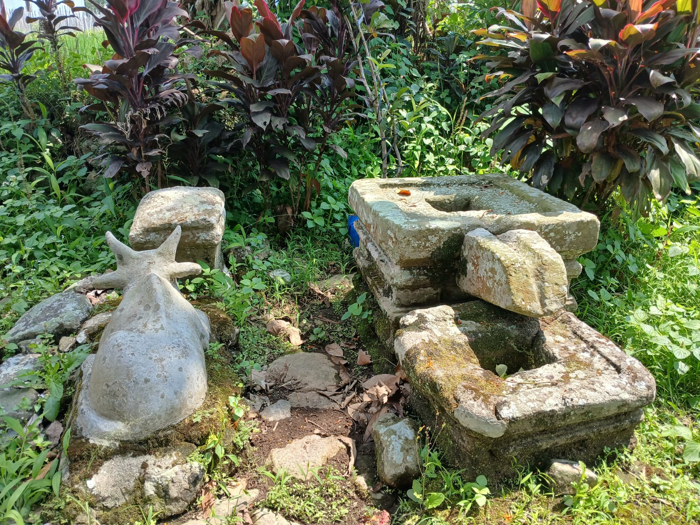
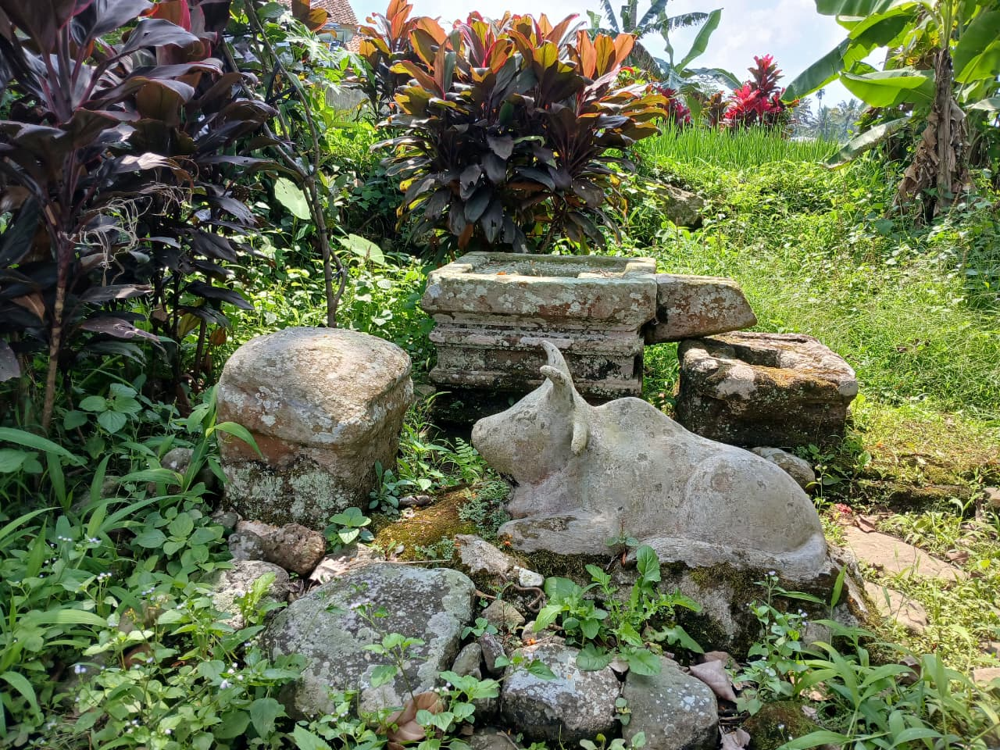
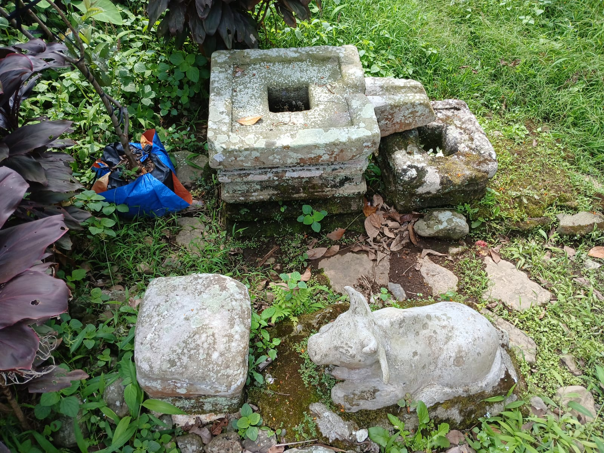
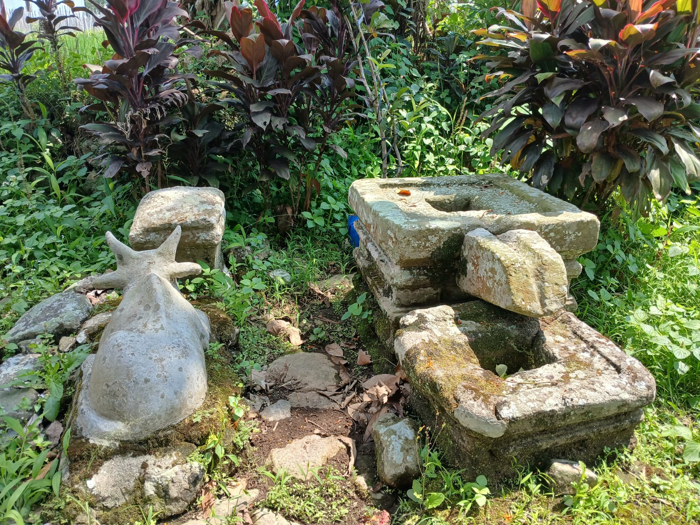
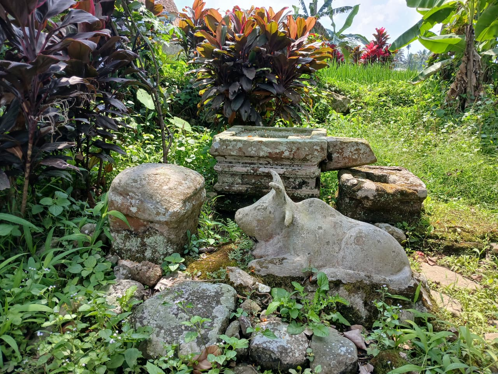
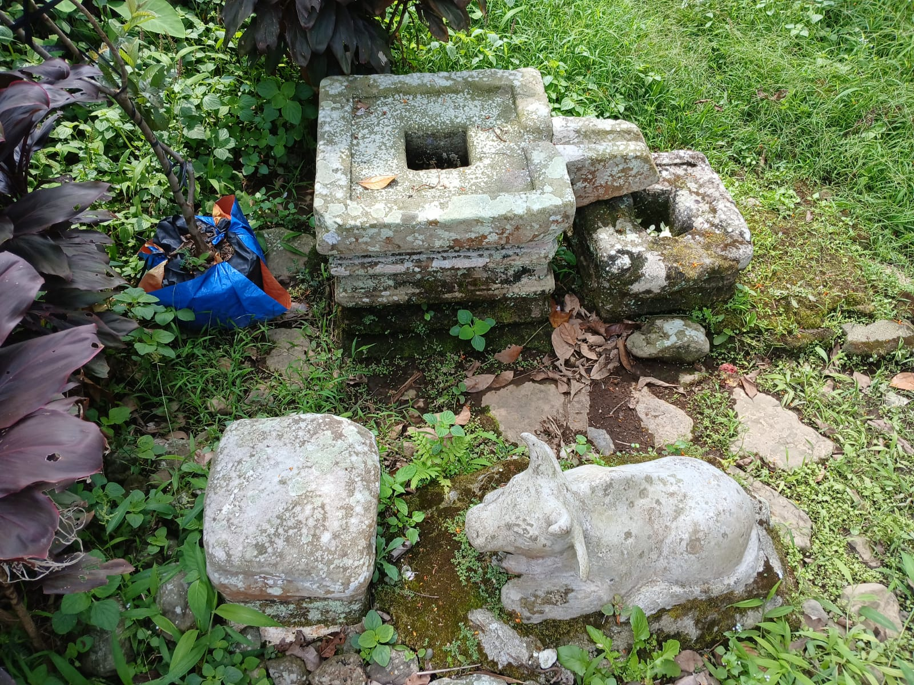
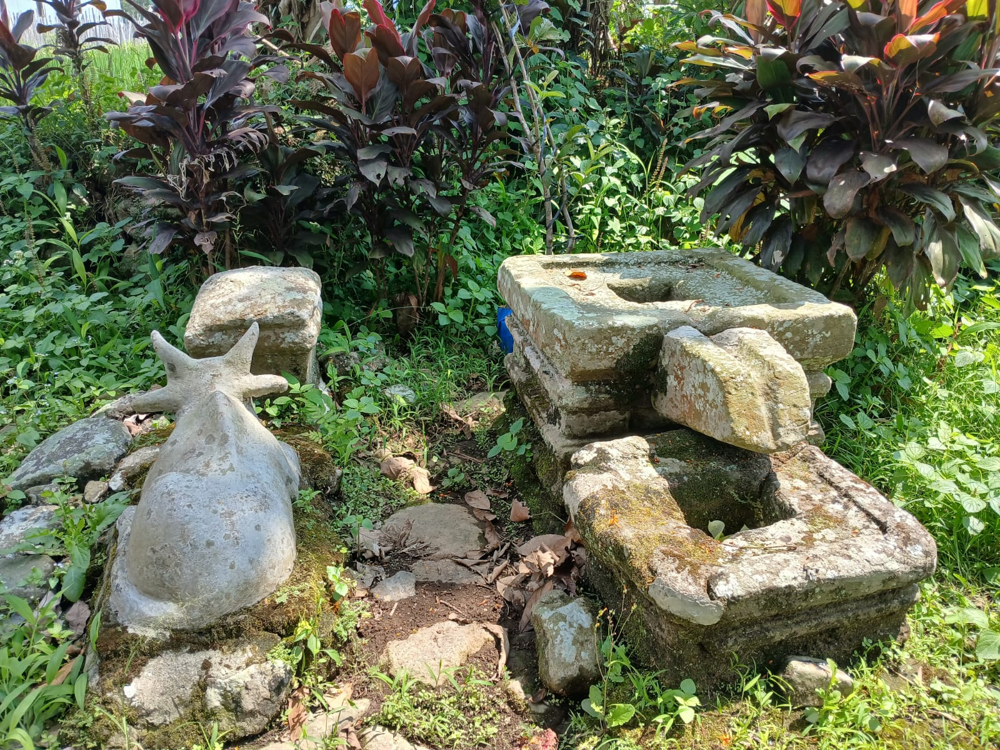
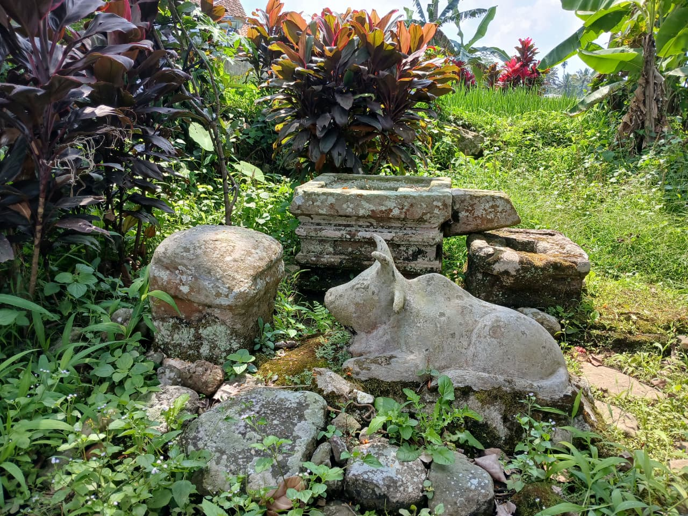
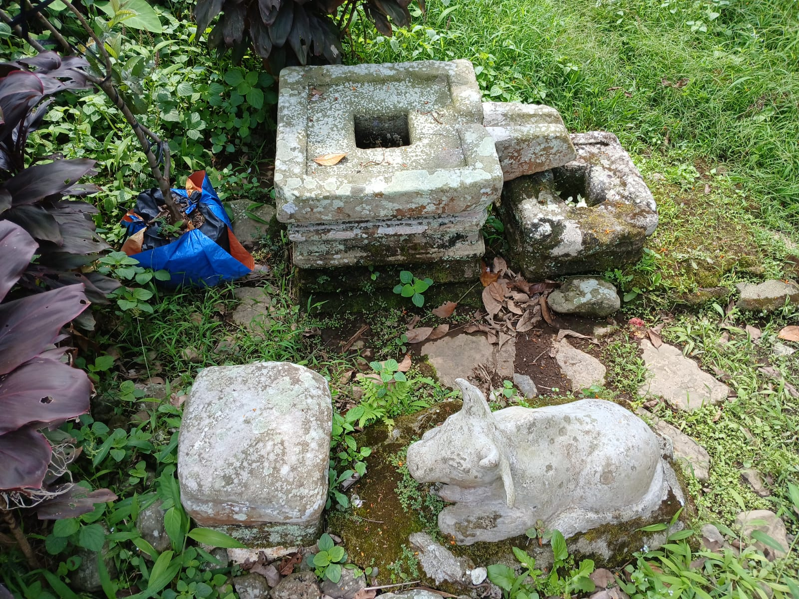

Galeri Foto

 





Warisan Sejarah & Cerita Rakyat Banyumas



Keberadaan situs ini diperkirakan berasal dari masa Kerajaan Medang atau Mataram Kuno, yang berjaya pada abad ke-8 hingga ke-10 Masehi. Temuan utama di situs ini adalah sebuah arca berbentuk lembu, yang diyakini sebagai representasi Nandi, yaitu kendaraan suci Dewa Siwa dalam ajaran agama Hindu. Arca Nandi biasanya ditempatkan di depan candi Hindu-Siwa sebagai penjaga dan perantara spiritual. Oleh karena itu, temuan arca ini menjadi petunjuk penting bahwa Situs Lembu Ayu dulunya merupakan bagian dari kompleks pemujaan atau tempat peribadatan masyarakat Hindu masa klasik.
Ki Pandung Aguna dikenal sebagai seorang pencuri yang mencuri dari orang kaya yang tidak mau menolong fakir miskin, kemudian membagikan hasil curiannya kepada mereka yang membutuhkan. Suatu ketika, Ki Pandung Aguna tertangkap sedang mencuri sapi dan akhirnya tubuhnya dipotong. Makamnya kini diyakini terletak di dekat Situs Lembu Ayu, yang telah dijadikan sebagai benda cagar budaya dan tempat ziarah oleh masyarakat setempat, termasuk pengunjung keturunan Tionghoa. Di sekitar situs ini juga terdapat benda-benda bersejarah seperti lingga, yoni, dan fragmen batu candi.